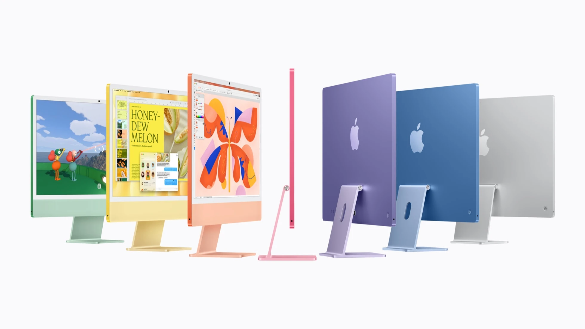

Apple · Field note 055
iMac moves to M6 with faster connectivity and storage
The October 27 announcement keeps the 24-inch desktop in seven colors, starting at $1,499.

Apple announced the M6 iMac on October 27, 2026, updating the hardware inside its thin all-in-one desktop.
The 24-inch 4.5K Retina display and seven-color selection remain central to its identity. The changes include Wi-Fi 7, Bluetooth 6, available 2.5 Gigabit Ethernet, and storage Apple says is up to twice as fast as the M4 model.
M6 configurations reach a 12-core CPU and 12-core GPU, with a Dual 16-core Neural Engine supporting on-device AI workloads. Performance comparisons come from Apple’s testing, rather than an independent CORE review.
U.S. pricing starts at $1,499 for the 10-core CPU and GPU configuration. The 12-core version starts at $1,699. Pre-orders open October 28, and deliveries and store availability begin November 6.
The announcement emphasizes computing and connectivity improvements within the familiar desktop format.